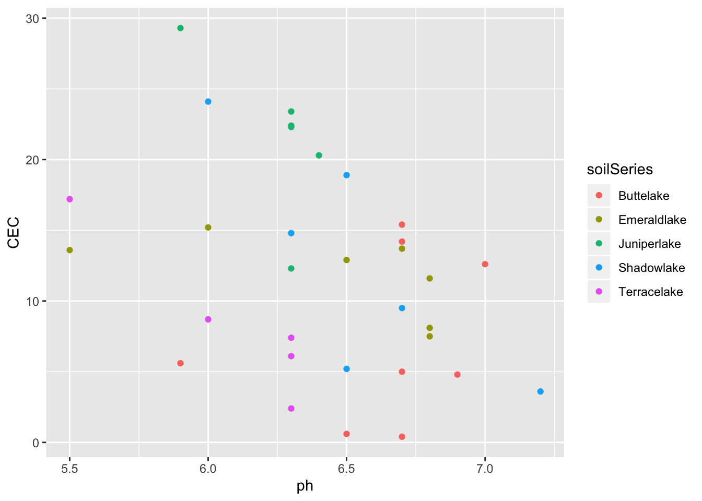
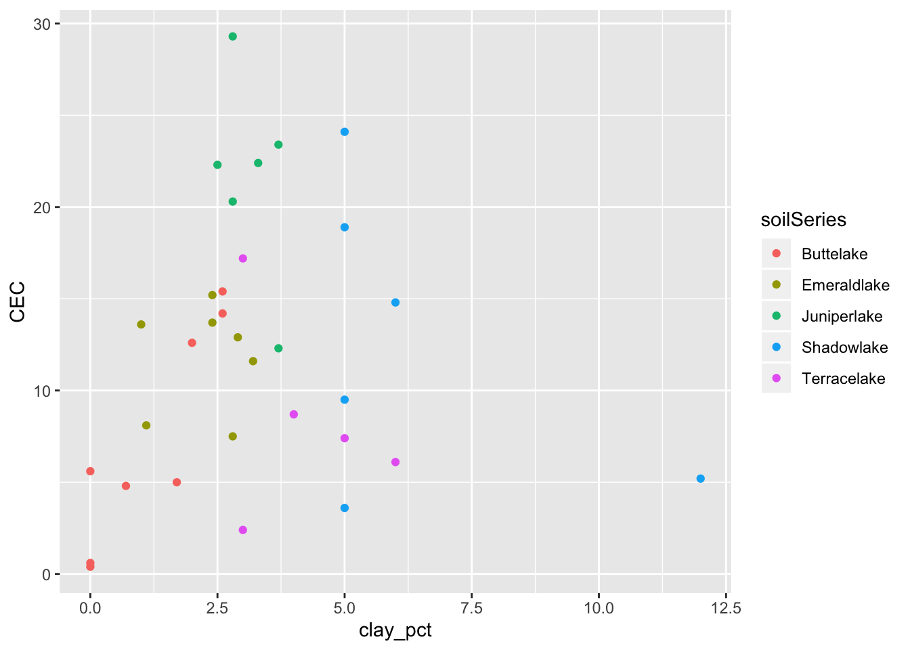
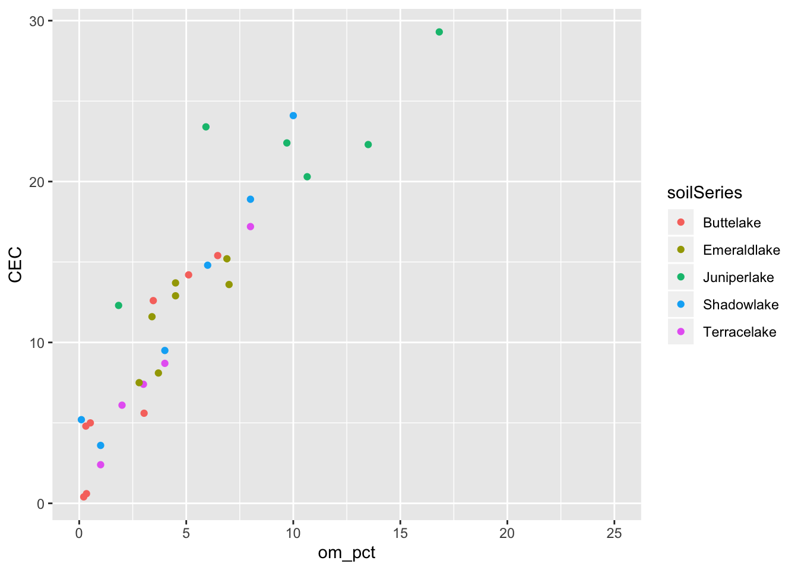
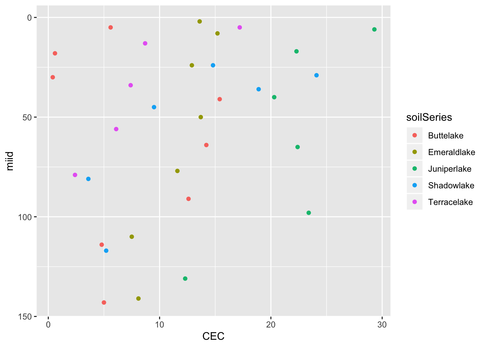
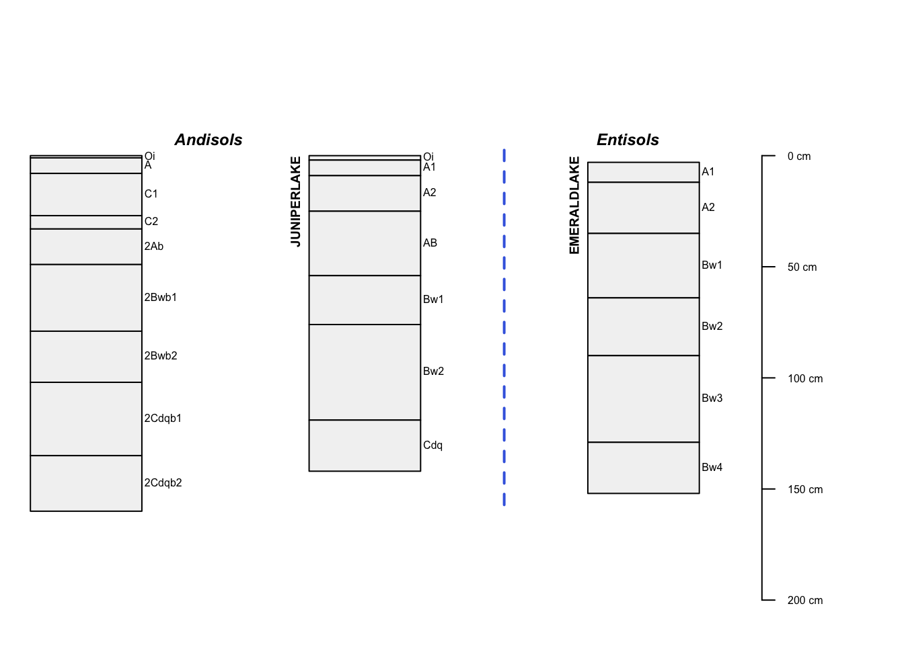
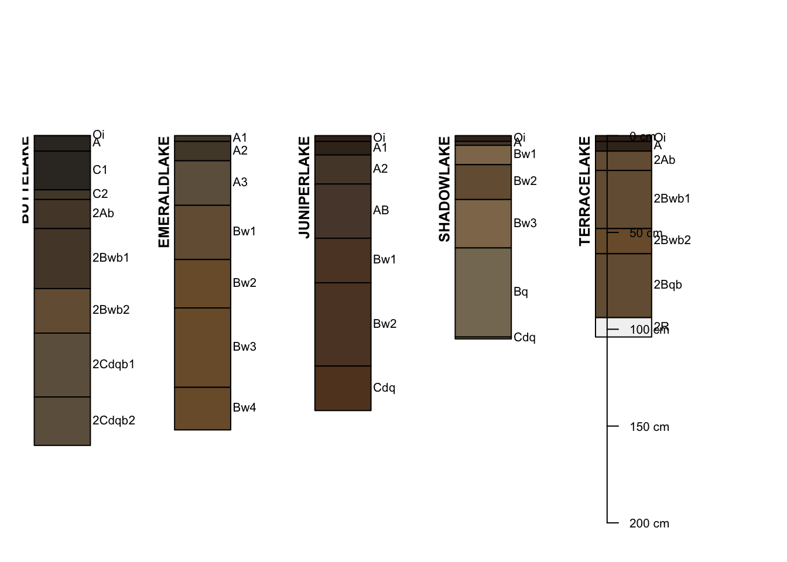
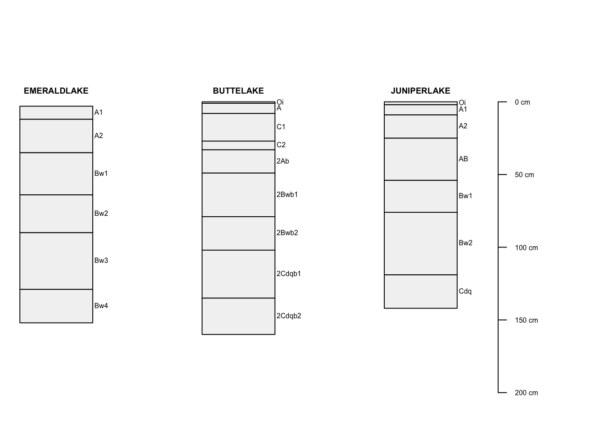
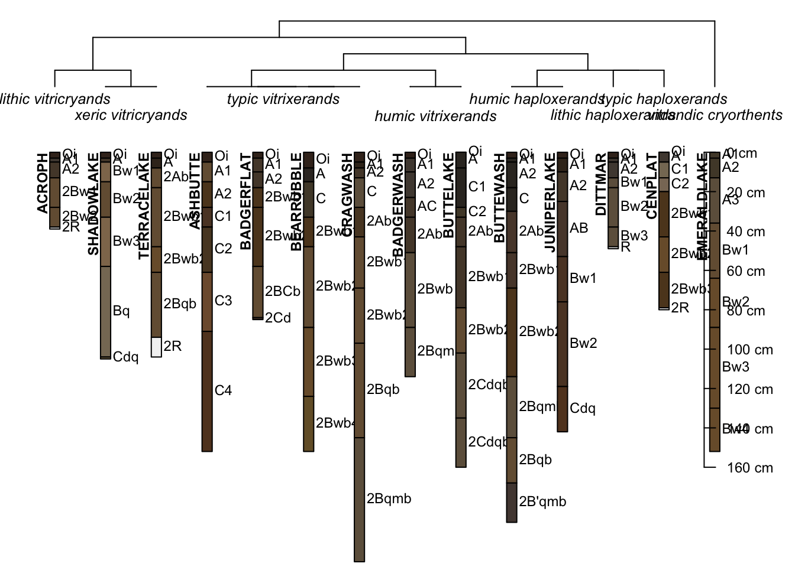

Understanding the basic concepts of soil formation and genesis applied across landscapes is difficult, it requires traversing the landscape and lots of digging or researching soil survey maps. Finding, organizing, exploring and interpreting NRCS soil survey maps and data is a process which consumes a lot of time and has evolved through the years from a strict physical format into flexible digital formats. However, just because something is in a new digital format does not always make the job easier as often times digital formats are stored in multiple online databases and hosted with different web services.
The tools available from the NRCS include very large and robust yet clunky web soil survey app (https://websoilsurvey.sc.egov.usda.gov/App/WebSoilSurvey.aspx), the soil data access portal (https://sdmdataaccess.nrcs.usda.gov/) offers links to backend SQL services and web queryable data from the data mart (https://ncsslabdatamart.sc.egov.usda.gov/) (Soil Survey, 2019). The California resource soil lab at UC Davis has built a few higher level services to make this process easier such as the SoilWeb apps (https://casoilresource.lawr.ucdavis.edu/soilweb-apps/) (Beaudette et al., 2009). Additionally, climate and meteorological information in stored in other databases which are accessed separately and must be joined with previous soil data resources.
While the sheer access to raw data and information is enormous it takes a considerable amount of time to organize, clean, and produce usable graphics from. There has been considerable work in trying to simplify and improve workflow programmatically by the National Cooperative Soil Survey. The algorithms for quantitative pedology package (soilAQP) for the R programming language provides build in functions for querying, organizing, cleaning and producing tables graphs from the multitudes of NRCS soil survey data available, as well as methods for querying meteorological data (Beaudette et al., 2013) However, this requires an intermediate to advanced knowledge of the R programming language as well as knowledge of querying databases with SQL (R Core Team, 2013).
A simple and more direct method can be employed by referencing the paper copies of the soil surveys produced by the NRCS, which are now also available in electronic PDF format and contain most of the information required by a soil scientist to explore and learn about a new and different landscapes in the United States.
If a curious soil scientist in potentia desired to learn more about the soils in the Cascade Range of California north of the Sierra Nevada, Lassen Volcanic National Park seems like a good place to start. Lassen Volcanic National Park is home to all 4 volcano types (cinder cone, plug dome, shield, and stratovolcano). When coupled with other soil forming factors (climate, topography, organics, time), the potential for an innovative and engaging opportunity for understanding mechanisms of pedogenesis of soils in Lassen Volcanic National Park becomes clear especially of less common soils such an Andisols. The objectives of this research is to i) Learn about soil property relationships in Lassen Volcanic National Park Andisols ii) Evaluate the soil survey data and information available and methods of use
Soils in Lassen National Park were explored digitally through the use of SoilWeb to identify potential trends and series to access data and gather more information about (Beaudette et al., 2009). The soil Terracelake, Emeraldlake, Shadowlake, Juniperlake, and Buttelake series were chosen as a subset of series to explore mostly to do the similarities of the “-lake” in their naming structure. Four of the five soils are classified as Andisols, with Emeraldlake classified as an Entisol with andic properties. The inclusion of a non Andisol soil may also serve as a subtle contrast between the breakouts of an Andisol and an Entisol with Vitrandic properties (Table 5). The soil datamart was accessed for soil series chemical data but did not have lab data for the most of the soil series to be investigated. Soilweb provided access to soil taxonomy, physical and some chemical data (horzons, particle size fractions, % organic matter, pH, CEC, and bulk density) available (Table 5,6). The NRCS Soil Survey published in 2010 and was consulted to find Andisol specific chemical information (NaF pH, %glass, P retention, and Al +1/2 Fe) and appended to data found from the soil web database (Table 6)(Soil Survey, 2010). Soil chemical and physical relationships such as were graphed in excel using the the data previously organized (Figures 1-7).
Soil survey information from the CA078 survey area was queried from the NRCS Soil Data access pathway with built in methods from the soilAQP package and used to create soil taxonomy and map unit inclusion information in tables 1 – 4. Soil series profile sketches and dendrograms, which show taxonomic relationships between series, were developed using the soilAQP package as well (Figures 8 - 11) (Beaudette et al., 2013, Soil Survey, 2019).
The tables and graphs were analyzed for basic observable relationships and trends, statistical methods were not employed to validate observations due to time constraints.




## Aquents Aquands Fluvents Aquepts Xerepts Orthents Cryands Xerands
## 72 359 798 1636 3715 4628 16191 71778| compname | n |
|---|---|
| Acroph | 9 |
| Aeric Endoaquents | 2 |
| Andic Durixerepts | 1 |
| Aquandic Cryaquents | 3 |
| Aquandic Endoaquepts | 1 |
| Aquandic Humaquepts | 6 |
| Aquepts | 20 |
| Aquic Dystroxerepts | 2 |
| Aquic Haploxerands | 2 |
| Ashbutte | 1 |
| Badgerflat | 6 |
| Badgerwash | 5 |
| Badland | 2 |
| Beaches | 2 |
| Bearrubble | 4 |
| Brokeoff | 2 |
| Buttelake | 6 |
| Buttewash | 5 |
| Cascadesprings | 4 |
| Cenplat | 3 |
| Chaos | 1 |
| Cinder land | 1 |
| Cragwash | 2 |
| Diamondpeak | 1 |
| Dittmar | 4 |
| Duric Vitraquands | 3 |
| Emeraldlake | 6 |
| Endoaquepts | 5 |
| Histic Humaquepts | 6 |
| Humic Haploxerands | 19 |
| Humic Xeric Vitricryands | 2 |
| Juniperlake | 7 |
| Kingsiron | 2 |
| Lava flows | 2 |
| Prospectpeak | 3 |
| Readingpeak | 6 |
| Riverwash | 3 |
| Rock outcrop | 42 |
| Rubble land | 25 |
| Scoured | 10 |
| Shadowlake | 9 |
| Sueredo | 11 |
| Summertown | 2 |
| Sunhoff | 5 |
| Talved | 2 |
| Terracelake | 16 |
| Terric Haplohemists | 1 |
| Typic Dystroxerepts | 3 |
| Typic Endoaquands | 11 |
| Typic Endoaquents | 7 |
| Typic Haploxerands | 1 |
| Typic Petraquepts | 3 |
| Typic Psammaquents | 1 |
| Typic Vitrixerands | 8 |
| Typic Vitrixerands, | 1 |
| Typic Xerorthents | 7 |
| Vitrandic Cryofluvents | 3 |
| Vitrandic Cryorthents | 11 |
| Vitrandic Xerofluvents | 5 |
| Vitrandic Xerorthents | 10 |
| Vitrixerands | 4 |
| Water | 1 |
| Xeric Vitricryands | 14 |
## Aquents Aquands Fluvents Aquepts Xerepts Orthents Cryands Xerands
## 145 449 1108 1914 4559 5505 23183 83454| compname | n | n_d |
|---|---|---|
| Acroph | 9 | 1 |
| Aeric Endoaquents | 2 | 1 |
| Andic Durixerepts | 1 | 1 |
| Aquandic Cryaquents | 3 | 1 |
| Aquandic Endoaquepts | 1 | 1 |
| Aquandic Humaquepts | 6 | 1 |
| Aquepts | 20 | 1 |
| Aquic Dystroxerepts | 2 | 1 |
| Aquic Haploxerands | 2 | 1 |
| Ashbutte | 1 | 1 |
| Badgerflat | 6 | 1 |
| Badgerwash | 5 | 1 |
| Badland | 2 | 1 |
| Beaches | 2 | 1 |
| Bearrubble | 4 | 1 |
| Brokeoff | 2 | 1 |
| Buttelake | 6 | 1 |
| Buttewash | 5 | 1 |
| Cascadesprings | 4 | 1 |
| Cenplat | 3 | 1 |
| Chaos | 1 | 1 |
| Cinder land | 1 | 1 |
| Cragwash | 2 | 1 |
| Diamondpeak | 1 | 1 |
| Dittmar | 4 | 1 |
| Duric Vitraquands | 3 | 1 |
| Emeraldlake | 6 | 1 |
| Endoaquepts | 5 | 1 |
| Histic Humaquepts | 6 | 1 |
| Humic Haploxerands | 19 | 1 |
| Humic Xeric Vitricryands | 2 | 1 |
| Juniperlake | 7 | 1 |
| Kingsiron | 2 | 1 |
| Lava flows | 2 | 1 |
| Prospectpeak | 3 | 1 |
| Readingpeak | 6 | 1 |
| Riverwash | 3 | 1 |
| Rock outcrop | 42 | 1 |
| Rubble land | 25 | 1 |
| Scoured | 10 | 1 |
| Shadowlake | 9 | 1 |
| Sueredo | 11 | 1 |
| Summertown | 2 | 1 |
| Sunhoff | 5 | 1 |
| Talved | 2 | 1 |
| Terracelake | 16 | 1 |
| Terric Haplohemists | 1 | 1 |
| Typic Dystroxerepts | 3 | 1 |
| Typic Endoaquands | 11 | 1 |
| Typic Endoaquents | 7 | 1 |
| Typic Haploxerands | 1 | 1 |
| Typic Petraquepts | 3 | 1 |
| Typic Psammaquents | 1 | 1 |
| Typic Vitrixerands | 8 | 1 |
| Typic Vitrixerands, | 1 | 1 |
| Typic Xerorthents | 7 | 1 |
| Vitrandic Cryofluvents | 3 | 1 |
| Vitrandic Cryorthents | 11 | 1 |
| Vitrandic Xerofluvents | 5 | 1 |
| Vitrandic Xerorthents | 10 | 1 |
| Vitrixerands | 4 | 1 |
| Water | 1 | 1 |
| Xeric Vitricryands | 14 | 1 |
| taxorder | n | n_d |
|---|---|---|
| Andisols | 187 | 5 |
| Entisols | 56 | 7 |
| Histosols | 1 | 1 |
| Inceptisols | 50 | 6 |
| NA | 78 | 1 |
| compname | n |
|---|---|
| Acroph | 9 |
| Aeric Endoaquents | 2 |
| Andic Durixerepts | 1 |
| Aquandic Cryaquents | 3 |
| Aquandic Endoaquepts | 1 |
| Aquandic Humaquepts | 6 |
| Aquepts | 20 |
| Aquic Dystroxerepts | 2 |
| Aquic Haploxerands | 2 |
| Ashbutte | 1 |
| Badgerflat | 6 |
| Badgerwash | 5 |
| Badland | 2 |
| Beaches | 2 |
| Bearrubble | 4 |
| Brokeoff | 2 |
| Buttelake | 6 |
| Buttewash | 5 |
| Cascadesprings | 4 |
| Cenplat | 3 |
| Chaos | 1 |
| Cinder land | 1 |
| Cragwash | 2 |
| Diamondpeak | 1 |
| Dittmar | 4 |
| Duric Vitraquands | 3 |
| Emeraldlake | 6 |
| Endoaquepts | 5 |
| Histic Humaquepts | 6 |
| Humic Haploxerands | 19 |
| Humic Xeric Vitricryands | 2 |
| Juniperlake | 7 |
| Kingsiron | 2 |
| Lava flows | 2 |
| Prospectpeak | 3 |
| Readingpeak | 6 |
| Riverwash | 3 |
| Rock outcrop | 42 |
| Rubble land | 25 |
| Scoured | 10 |
| Shadowlake | 9 |
| Sueredo | 11 |
| Summertown | 2 |
| Sunhoff | 5 |
| Talved | 2 |
| Terracelake | 16 |
| Terric Haplohemists | 1 |
| Typic Dystroxerepts | 3 |
| Typic Endoaquands | 11 |
| Typic Endoaquents | 7 |
| Typic Haploxerands | 1 |
| Typic Petraquepts | 3 |
| Typic Psammaquents | 1 |
| Typic Vitrixerands | 8 |
| Typic Vitrixerands, | 1 |
| Typic Xerorthents | 7 |
| Vitrandic Cryofluvents | 3 |
| Vitrandic Cryorthents | 11 |
| Vitrandic Xerofluvents | 5 |
| Vitrandic Xerorthents | 10 |
| Vitrixerands | 4 |
| Water | 1 |
| Xeric Vitricryands | 14 |
| taxorder | taxsuborder | taxgrtgroup | n_d | n |
|---|---|---|---|---|
| Andisols | Aquands | Endoaquands | 1 | 11 |
| Andisols | Aquands | Vitraquands | 1 | 3 |
| Andisols | Cryands | Vitricryands | 1 | 56 |
| Andisols | Xerands | Haploxerands | 1 | 53 |
| Andisols | Xerands | Vitrixerands | 1 | 64 |
| Entisols | Aquents | Cryaquents | 1 | 3 |
| Entisols | Aquents | Endoaquents | 1 | 9 |
| Entisols | Aquents | Psammaquents | 1 | 1 |
| Entisols | Fluvents | Cryofluvents | 1 | 3 |
| Entisols | Fluvents | Xerofluvents | 1 | 5 |
| Entisols | Orthents | Cryorthents | 1 | 17 |
| Entisols | Orthents | Xerorthents | 1 | 18 |
| Histosols | Hemists | Haplohemists | 1 | 1 |
| Inceptisols | Aquepts | Endoaquepts | 1 | 6 |
| Inceptisols | Aquepts | Humaquepts | 1 | 12 |
| Inceptisols | Aquepts | Petraquepts | 1 | 3 |
| Inceptisols | Xerepts | Durixerepts | 1 | 1 |
| Inceptisols | Xerepts | Dystroxerepts | 1 | 8 |
| taxorder | taxsuborder | n | n_d |
|---|---|---|---|
| Andisols | Aquands | 14 | 2 |
| Andisols | Cryands | 56 | 1 |
| Andisols | Xerands | 117 | 2 |
| Entisols | Aquents | 13 | 3 |
| Entisols | Fluvents | 8 | 2 |
| Entisols | Orthents | 35 | 2 |
| Histosols | Hemists | 1 | 1 |
| Inceptisols | Aquepts | 41 | 4 |
| Inceptisols | Xerepts | 9 | 2 |
| NA | NA | 78 | 1 |
| suborder | sum | mean | n |
|---|---|---|---|
| Xerands | 83454 | 2318.1667 | 36 |
| Orthents | 5505 | 688.1250 | 8 |
| Cryands | 23183 | 1545.5333 | 15 |
| Aquepts | 1914 | 478.5000 | 4 |
| Xerepts | 4559 | 1519.6667 | 3 |
| Fluvents | 1108 | 369.3333 | 3 |
| Aquands | 449 | 449.0000 | 1 |
| Aquents | 145 | 72.5000 | 2 |
| NA | 6403 | 1067.1667 | 6 |
| suborder | sum | mean | n |
|---|---|---|---|
| Xerands | 83454 | 2318.1667 | 36 |
| Orthents | 5505 | 688.1250 | 8 |
| Cryands | 23183 | 1545.5333 | 15 |
| Aquepts | 1914 | 478.5000 | 4 |
| Xerepts | 4559 | 1519.6667 | 3 |
| Fluvents | 1108 | 369.3333 | 3 |
| Aquands | 449 | 449.0000 | 1 |
| Aquents | 145 | 72.5000 | 2 |
| NA | 6403 | 1067.1667 | 6 |
| Var1 | Freq |
|---|---|
| Aquands | 14 |
| Aquents | 13 |
| Aquepts | 41 |
| Cryands | 56 |
| Fluvents | 8 |
| Hemists | 1 |
| Orthents | 35 |
| Xerands | 117 |
| Xerepts | 9 |
| Sum | 294 |
## < table of extent 0 >

The Lassen National Park Soil Survey covers 127,000 acres with 379 different map units which includes 4 soil orders (Andisols, Entisols, Inceptisols, Histosols) composed of 8 sub orders which break into 18 great groups (Table 1,2,3). Andisols make up around 85% of the soils in the park (Table 2). Many of the map units are described at the series level of taxonomy, however, many are only mapped as their great group class, which suggests the recent and raw nature of Lassen and recent volcanic events (Table 4).
The relationship between soil pH and CEC was explored and did not express a strong relationship, however a slight clustering of soils with low pH and high CEC can be seen in Juniperlake and Shadowlake series (Figure 1). The weak association between soil pH and CEC could be due to the interactions of soil clay content (% clay) and the influence of organic matter (%OM) known to be acidic and were investigated for further information. Soil CEC and percent clay content seem to exhibit a moderately strong positive relationship. CEC increased with increasing clay content from a CEC of 0.4 cmolc/kg-soil at 0% clay content to an average CEC of 15 cmolc/kg-soil at around 4-6% clay and a maximum of 29 cmolc/kg at 2.8% clay content in the Juniperlake series (Figure 2).
The relationship between %OM and CEC is very strong. CEC increased with %OM from 0.34 cmolc/mg-soil at 0.6% OM to a maximum of 29 cmolc./kg at 16% OM (Figure 3). Soil CEC increased with soil %OM in a very linear fashion with the Juniperlake series at the high end with most horizons above 20 cmolc/kg-soil and 8% OM. Organic matter typically builds up at the surface and nd illuvial processes take time to draw organic matter and increase CEC at depth which is reflected in the soil CEC as a function depth graph (Figure 4). CEC decreased with depth in most profiles except the Buttelake series which increased dramatically in a lower 2Ab and 2Bw1,b Horizons which are buried horizons from recent volcanic events and are expressing the same trend of decreasing CEC from the surface, except that it is a buried horizon (Figure 4). Andic soil properties were investigated using NaF pH, % glass, and Al + ½Fe ammonium oxalate extractable ion data. The relationship between NaF pH and soil CEC shows a weak to moderate positive relationship with the soils with a NaF pH above 10 typically had a CEC above a 5 cmolc/kg-soil, which makes sense due to the NaF essentially exchanging with OH- ions bound on exchange sites of short range order minerals (allophane, imogolite) typically found in association with volcanic ashes.
The relationship between phosphorus retention and NaF is clear with a strong linear positive relationship. The P retention in soils increased by 96% from a low of 6% retention and a NaF pH around 8.2 to 100% P retention at NaF pH 10.5 – 11.5 (Figure 7). Phosphorus % retention with NaF seems to indicate a deeper relationship with the short range order minerals (allophane, imogolite) and has been a subject of interest with soil scientists studying Andisols. The specifications of Andic soil properties as a diagnostic feature are explained in detail in the NRCS Guide to Soil Taxonomy and one of the key components is the % glass to ammonium oaxalate extractable Al + ½Fe fraction. Only 3 of the horizons from the “-lake” soil series described fell outside of the dotted cutoff line (Figure 7). All of the soils meet the the requirements for an andic diagnostic subsurface feature.
The soil profile sketches created using the soilAQP package are useful tools for interpreting soil taxonomy and horizon information in a graphical way if you have a basic understanding of soil horizon designations (Figure 7). When the the graphics are re-ordered as a dendrogram the taxonomic relationships become clear and when coupled with horizon and color information a good amount of information can be readily interpreted from a soil scientist in potentia (Figure 8). Soil profile sketches and dendrograms were developed to include another 9 soils from Lassen Volcanic Park to further illustrate the taxonomic relationships of Andisols in Lassen Volcanic National Park.
A plethora of data exists for any soil scientist or soil enthusiast in a wide variety of formats. Sometimes it is quicker to just read the manual soil survey and input data directly into excel, if you know what you are looking for. Sometimes it is quicker and easier to download and aggregate multiple soils, if you know how to do what you want to do. Ultimately it is up to the user of the information to decide on how best to collect, organize, store, and synthesize new data from the previous efforts of hundreds, if not thousands of people. This research employed many different forms of data and used Microsoft Excel and R to interact and create useable information for this report.
For the purposes of academic investigations and study utilizing or at least perusing all of the resources available is useful. This investigation of Andisols was able to determine the relative distribution of soil orders, sub orders, great groups and series within the park in a short amount of time using programmatic methods, which would have much more difficult if tabulated and calculated by hand (Tables 1-4). The Andic soil data that was not available on the soil datamart regarding the series of interest and was input manually from reading the soil survey report information in the series descriptions. The process took effort but yielded good results and nice graphs which proved useful for interpretation (Tables 5,6; Figures 1-7). The research into investigation and data collection methods of available soil survey data was a valuable exercise which served to improved the knowledge of specific soil physical and chemical relationships of andic soil properties. The research also highlighted the future work and goal to improve understanding of the R programming language and the soilAQP package to be able to readily develop actionable soil data in a short turnaround time.
Copyright © 2019 Irfcorp, Inc. All rights reserved.